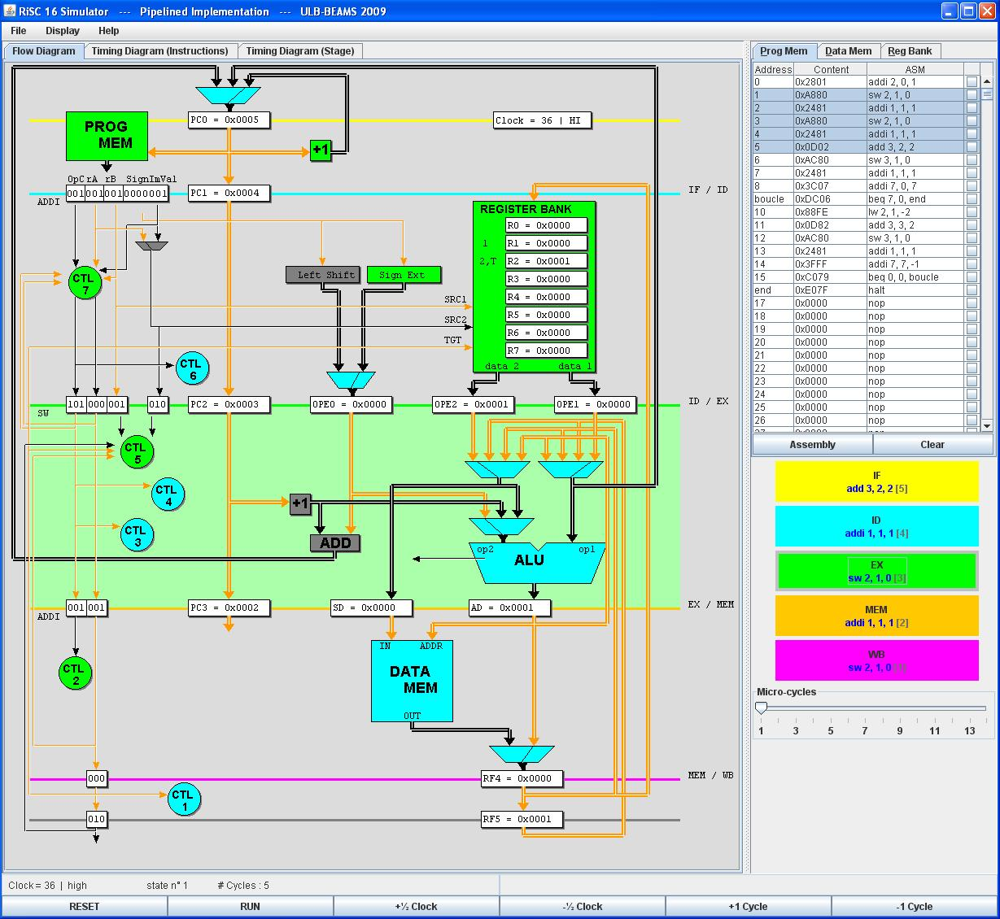

Help Index
RiSC16 Visual Simulator (Pipelined Implementation)
├ Sequence of events
├ Interface Description
└ Pipeline Hazards
The interface of this simulator is similar to the sequential one. The slider allows only moving one cycle forward and backward.
The colored stack on the right side of the screen shows at every moment which instruction is in each pipeline stage. The main window has got three tabs:
The last two diagrams are helpful to emphasize the effects of the hazards on the pipeline performance.

Help Index
RiSC16 Visual Simulator (Pipelined Implementation)
├ Sequence of events
├ Interface Description
└ Pipeline Hazards